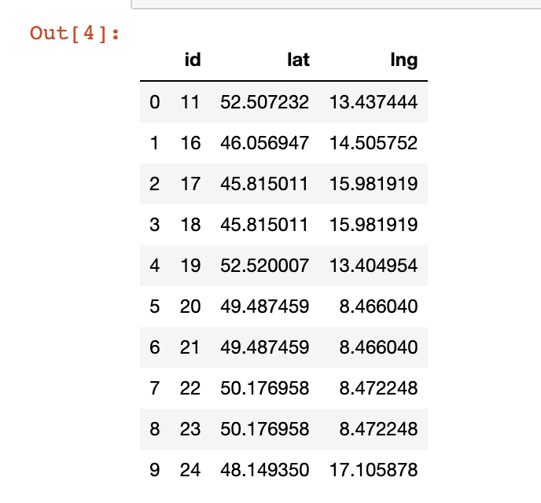
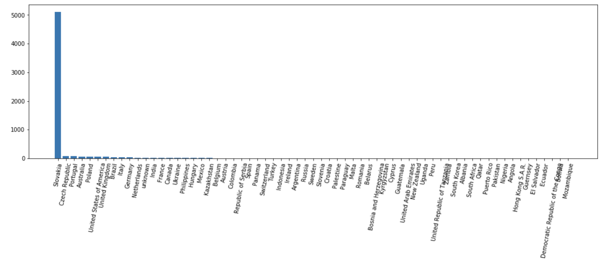
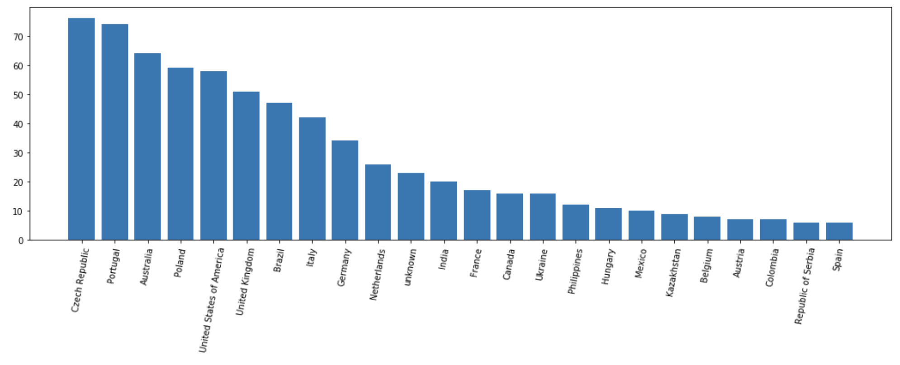

Batch assign a country to longitude / latitude coordinates
A useful script to batch convert a bunch of coordinates to a country (API call for each coordinate pair is sometimes too slow).
There was a bunch of data in an Excel file having coordinates but no country information.
import pandas as pd
df = pd.ExcelFile("data.xlsx").parse("Sheet1")

Thanks to linqu's post on Stackoverflow it's easy to do a batch conversion:
import requests
from shapely.geometry import mapping, shape
from shapely.prepared import prep
from shapely.geometry import Point
data = requests.get("https://raw.githubusercontent.com/datasets/geo-countries/master/data/countries.geojson").json()
countries = {}
for feature in data["features"]:
geom = feature["geometry"]
country = feature["properties"]["ADMIN"]
countries[country] = prep(shape(geom))
def get_country(lon, lat):
point = Point(lon, lat)
for country, geom in countries.items():
if geom.contains(point):
return country
return "unknown"
Add the country column and dump to disk:
df['country'] = df.apply (lambda row: get_country(row['lng'], row['lat']), axis=1)
df.to_csv('data_with_country.csv')
Check out the result:
from matplotlib import pyplot as plt
counts = df.groupby(['country']).agg(len).sort_values(by=['id'], ascending=False)
plt.xticks(rotation=80)
plt.bar(counts.index, counts.id)
plt.show()

above5 = counts[counts['id']>5][1:]
f, ax = plt.subplots(figsize=(18,5))
plt.xticks(rotation=80)
plt.bar(above5.index,above5.id)

That's all!
~